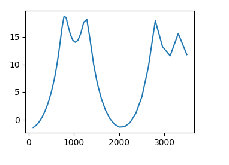
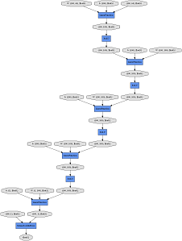
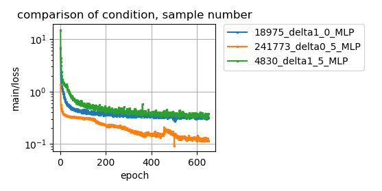

凸型のピークをもつ１Ｄデータの左端の第１ピークの位置(index)を推定する。
下図に１Ｄデータの例を示す。

入力64次元。5層のFCで中間層のユニット数は100。出力1次元。
学習する未知パラメーターの数は36901個ある。

モデルを可視化したグラフがdocsホルダーの中にあります。(cg_MLP.png)
学習サンプル数を、4830個(-d 1.5), 18975個(-d 1.0), 241773個(-d 0.5)と変化させたときの損失(main/loss)の様子を下図に示す。

学習サンプル数が少ないと(4830,18975)、損失はより大きな値で止まり下がりきらない。
学習サンプル数は学習する未知パラメーター数よりも十分大きいものが必要のようだ。
python make_dataset.py -d 1.0 train用のデータセットの作成
python make_dataset.py -d 1.5 test用のデータセットの作成
python train.py -d 1.0 -e 1000 1000エポック回、学習する
python log_plot.py 損失のプロット（任意）
ここではchainer 3.2.0を使っています。chainerのバージョンが違うとエラーが発生するかもしれない。
学習サンプルを使っての判定でも正解率85～95%とよくない。
train.pyとplot_report_logscale.pyはchainerのレポジトリにあるものを変更したものです。chainerのライセンスについては、LICENSE-chainer.txtを見てください。
上記以外は、MITライセンスに従います。